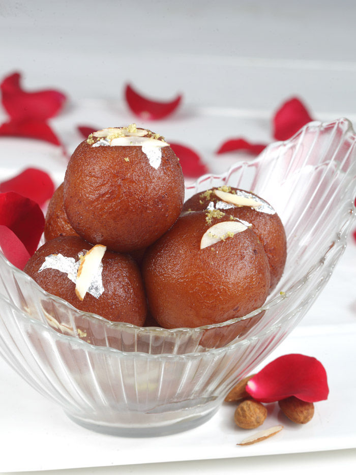

Gulab Jamun
Ingredients
150 g Khoya Dhaab50 g Chenna
30 g Maida
10 g Cornflour
1 tsp Green Cardamom Powder
1/4 tsp Baking Powder
Canola Oil to fry
500g Sugar
1 lt Water
1 no Lemon Slice
Method Preparation
Mix the sugar, lemon slice and water and keep on fire to boil. Remove any scum. Reduce to 3/4th. At this stage remove half of the syrup and keep aside and boil the rest till it reaches 2 string consistency. Remove from fire and keep warm. Take a clean marble or a wide paraat. Mix the chenna and khoya together and mash it with the base of your palm to ensure there are no grains. Mix in the maida, cornflour and baking powder. Make into tight round balls of approx 30 gms each. Heat canola oil to medium hot and gently slide the gulab jamuns in the oil. Make sure you dont put any spoon now as there are chances it may break, wait till the gulab jamuns start to float. At this stage gently increase the flame and cook till golden brown. Remove and drop them gently into the light sugar syrup we prepared. Keep them there for 10-12 mins. Then transfer the same into the sugar syrup with 2 string consistency. Let them rest for half hour. Before serving gently heat them with the syrup.